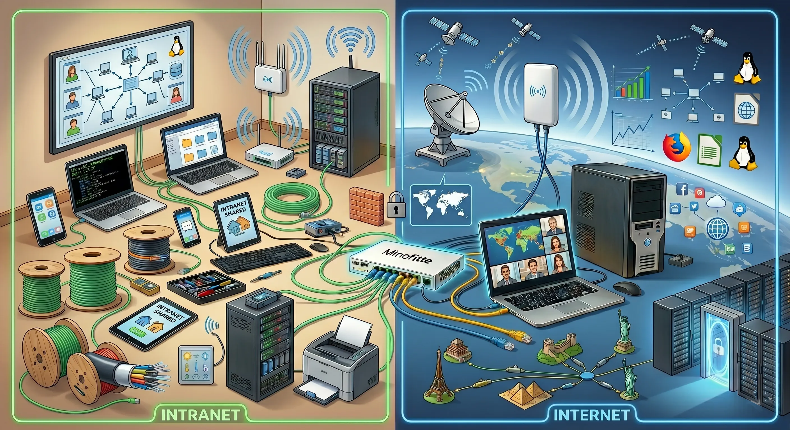
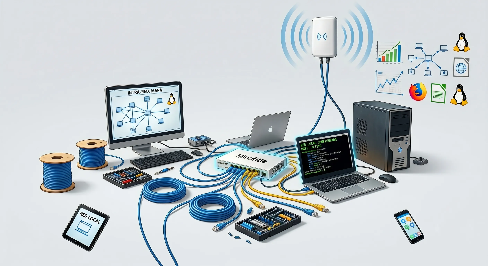
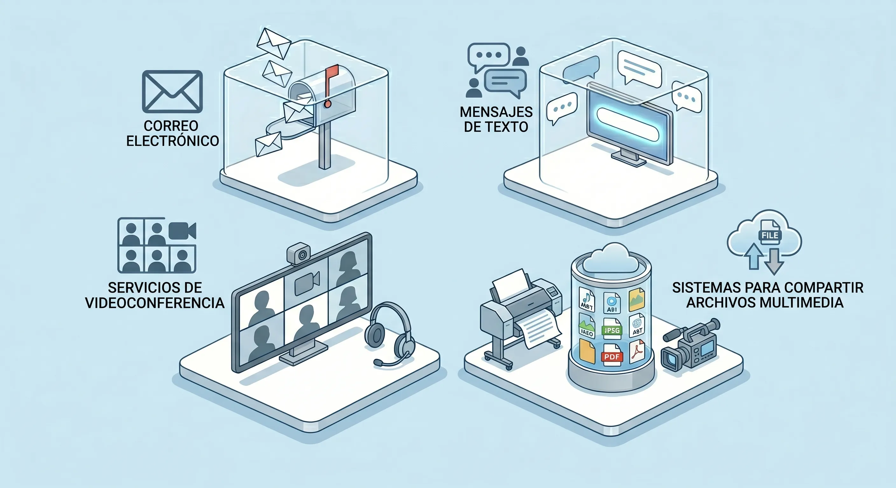
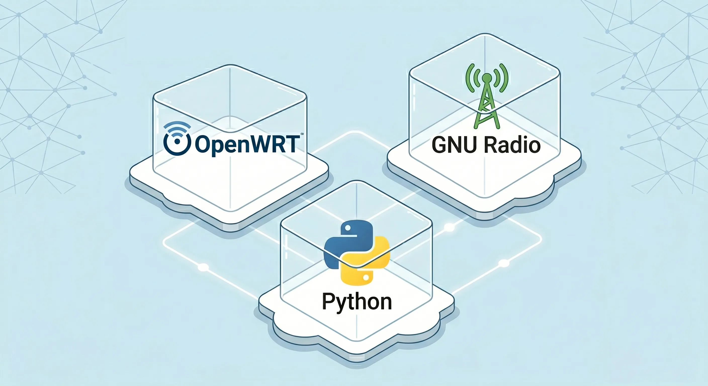
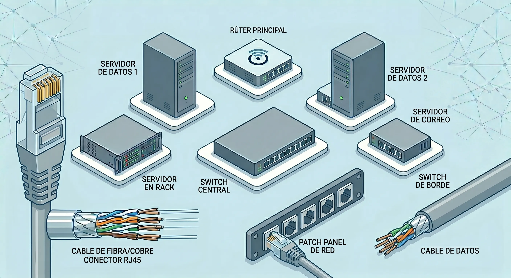

¿Qué es MOSYNETI?
MOSYNETI (Modular System Network Iztapalapa) es un sistema modular diseñado para conectar y ampliar la cobertura de una red en comunidades que tienen acceso limitado o que carecen de internet. Su objetivo principal es erradicar la brecha digital que afecta principalmente a las zonas rurales y urbanas marginadas mediante la construcción de intranets comunitarias autogestionadas con software y hardware libre.
Intranet vs Internet
Una intranet es una red interna que permite compartir datos localmente (por ejemplo, contenido con tu vecino), conectando dispositivos como celulares, tablets o computadoras. El internet, en cambio, es una red internacional de redes con alcance global que transmite datos a cualquier parte del mundo en segundos.

Elementos de la Red
Armar una intranet requiere almenos un router para coordinar y direccionar los datos a su destino, además de computadoras, antenas y cables Ethernet. Al configurarse con software libre, resulta sumamente accesible y sencillo.

Sistema en Capas
Diseñado en capas para facilitar la integración de nuevas funcionalidades:
Hace referencia a todos los servicios que puede ofrecer la red, tales como correo electrónico, mensajes de texto, servicios de videoconferencia o sistemas para compartir archivos multimedia.

de Control
Se refiere a los algoritmos, protocolos y sistemas operativos que permiten la operación de los equipos.

Hace referencia a todos los componentes físicos (hardware), como pueden ser routers (enrutadores), switches y servidores, así como a los cables de red, Ethernet (UTP/STP), encargados de establecer la comunicación física de la intranet.

El Concepto Modular
Permite atender las distintas necesidades de cada comunidad, se pueden elegir y adaptar los módulos necesarios de forma independiente:
Módulo Router
Es el elemento central para conectar los diversos dispositivos a través del software OpenWRT.
- 4 Equipos compatibles: Routers genéricos, Raspberry Pi, Computadoras de uso personal (se les sustituye el software previo) o Servicios virtuales (máquinas virtuales / Docker).
- Configuración: Punto de Acceso (conexión de usuarios) y Red Mesh (conexión entre routers).
Videos :
OWRT en raspberry
OWRT en| ruteador
Red Mesh con OWRT
Amplificación y Antenas
Ideal para comunidades donde se necesitan enlaces inalámbricos de mayor alcance.
- Amplificadores: Se recomienda el uso de componentes comerciales compatibles con los modulos de MoSyNetI
- Antenas Caseras: MoSyNetI provee diseños de antenas con materiales caseros y se han diseñado antenas Yagi Uda y Parabólicas con frecuencia 2.4 GHz (WiFi).
Videos :
Tutorial para crear tu propia Antena Yagi
Antenas, Amplificadores
Radiocomunicaciones
Radio programable (SDR) es un conjunto de herramientas donde los bloques de procesamiento son definidos por software, conectada a antenas transmisoras/receptoras.
- Hardware: Una placa de desarrollo (Raspberry Pi, PC o Laptop) acoplada a una SDR.
- Programación: Realizada con el software de bloques GNU Radio (basado en Python y C++) y el repositorio Line Suite para la gestión de SDR.
Videos :
Instalacion GNU Radio
Tutorial Raspberry con Ettus y GNU Radio
Módulo de Aplicación
Protege la información confidencial que se transmite por los canales de comunicación inalámbricos.
- Algoritmo: Emplea AES-Caos desarrollado por el grupo SDR UAM (Estándar de Cifrado Avanzado).
- Operación: Distorsiona las propiedades sintácticas, semánticas y estadísticas del mensaje, sequiere ejecutar una aplicación en todos los dispositivos de los usuarios para lograr un cifrado de extremo a extremo.
Videos:
Cifrado AES-Caos
Criptografía Simétrica

Cursos e Información de Soporte
Síguenos en nuestras páginas y redes sociales oficiales del proyecto.